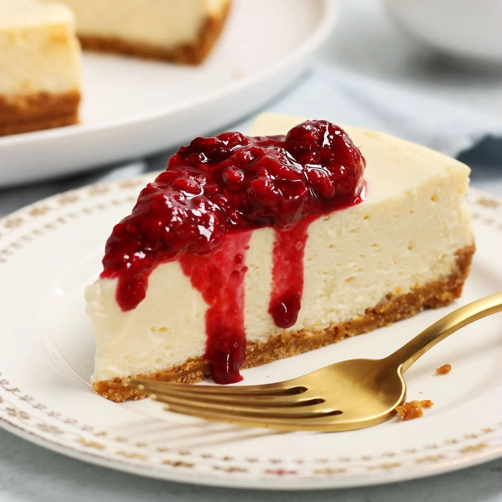
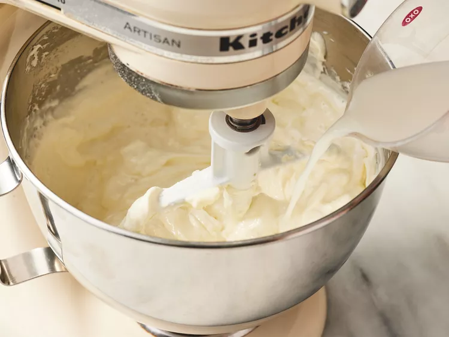
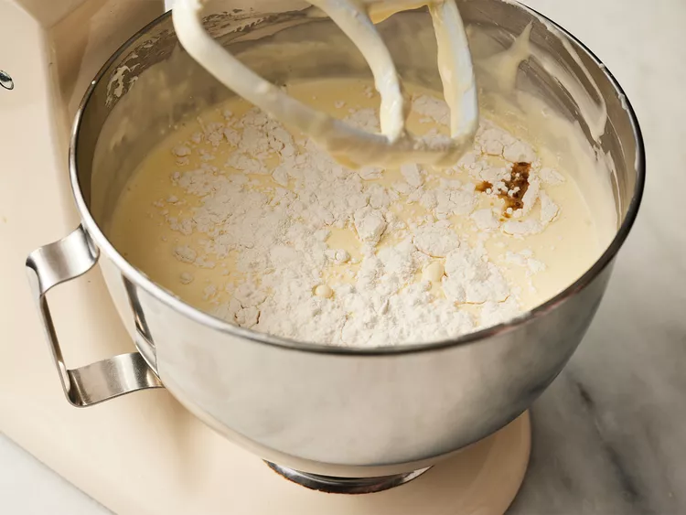
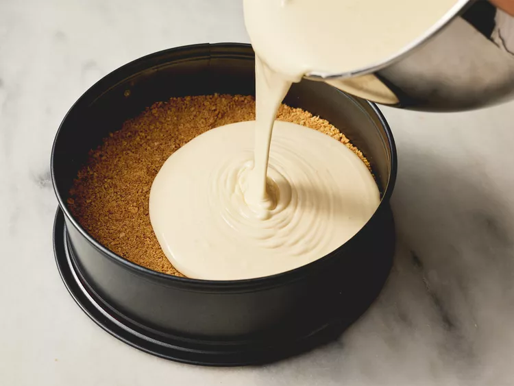
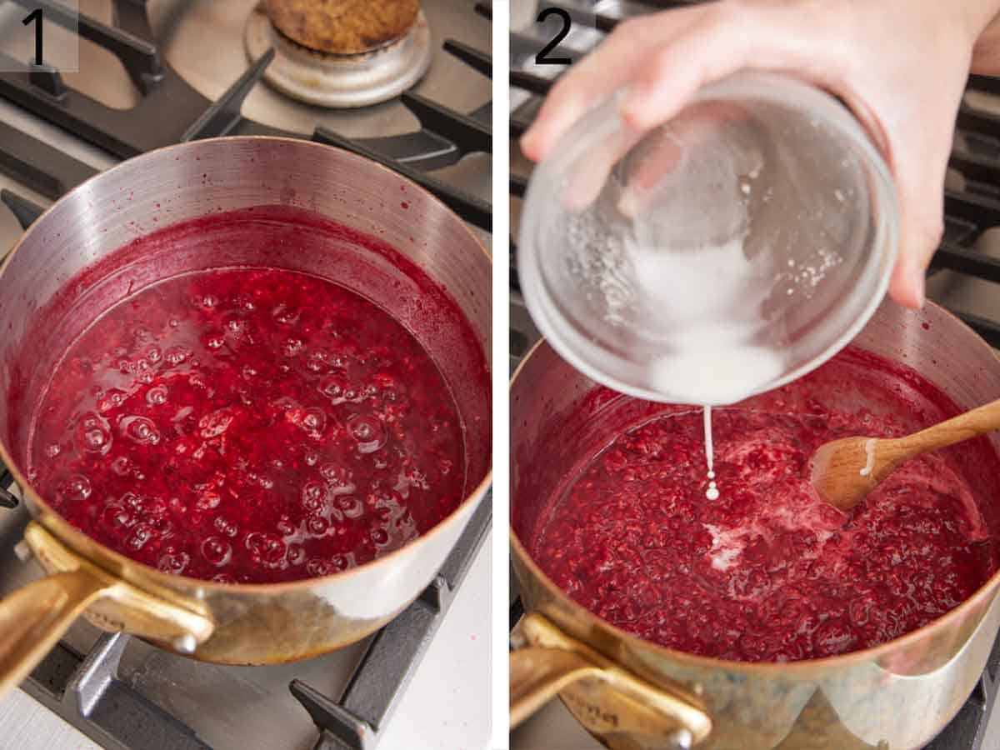
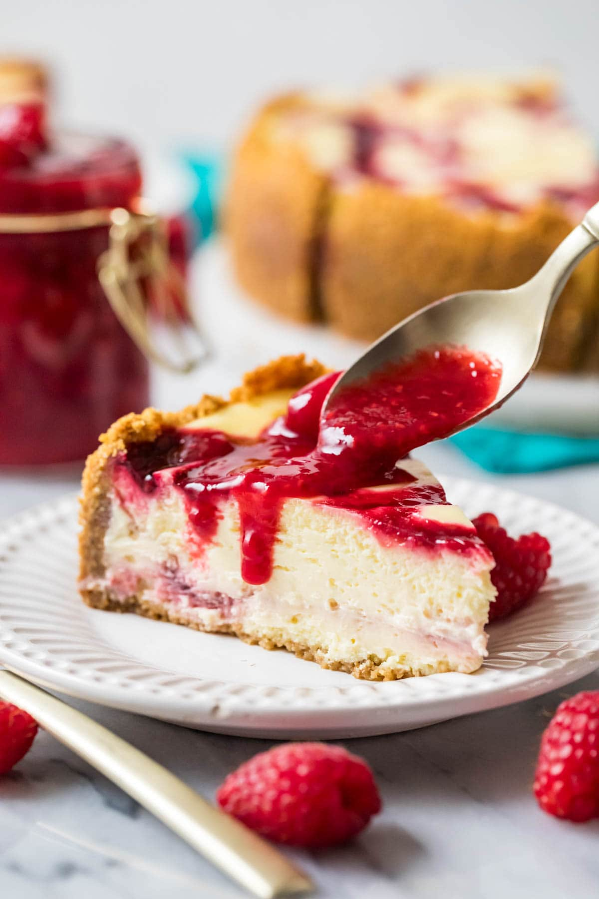

Raspberry
Cheesecake
A classic creamy cheesecake topped with fresh raspberries and raspberry jelly

LEVEL
Intermediate
TOTAL
14 hr
PREP
30 min
CHILL
12 hr
COOK
1 hr 30 min
YIELD
12–15 servings
Ingredients
01 - The crust
02 - The filling
03 - The topping
Instructions
01. Make the crust
Mix graham cracker crumbs with melted butter and sugar. Press firmly into the bottom of a springform pan.
02. Prepare the filling
Beat the cream cheese and sugar until smooth. Add the eggs one at a time, then mix in the vanilla.
View step photos


03. Add the raspberries
Gently fold fresh raspberries into the cheesecake filling.
04. Fill the pan
Pour the filling over the prepared crust and smooth the top with a spatula.
View step photos

05. Bake the cheesecake
Bake at 325°F until the edges are set and the center still has a slight wobble.
06. Let it chill
Allow the cheesecake to cool, then refrigerate for at least four hours or overnight.
07. Make the raspberry topping
Cook raspberries with a little sugar until softened. Let the sauce cool before adding it to the cake.
View step photos


08. Serve and enjoy
Spread the raspberry topping over the cheesecake, slice, and enjoy!